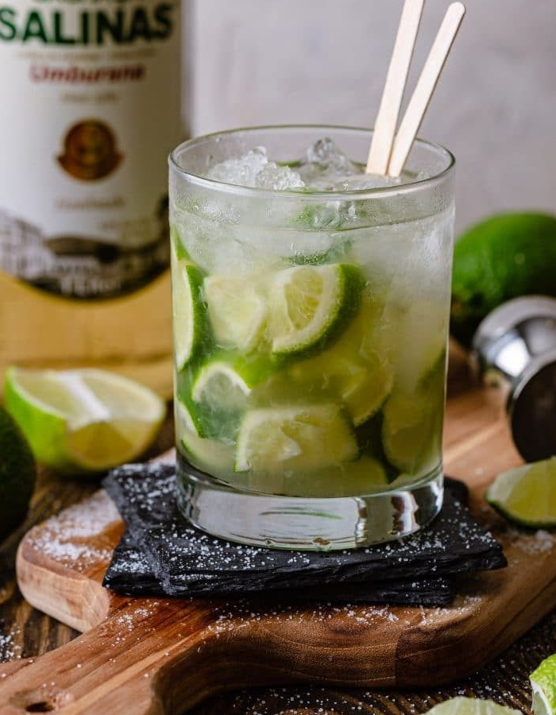

Caipirinha

Ingredientes:
60 ml de cachaça
1 limão
2 colheres de sopa de açúcar (ou a gosto)
Gelo
Instruções:
Modo de preparo:
Lave bem o limão e corte-o em rodelas ou cubos.
Coloque as rodelas ou cubos de limão em um copo baixo ou um copo de caipirinha.
Adicione o açúcar sobre o limão no copo.
Com o auxílio de um socador ou pilão, macere suavemente o limão com o açúcar, espremendo-o para liberar seu suco e misturar com
o açúcar.
Adicione o gelo ao copo, preenchendo-o quase até o topo.
Despeje a cachaça sobre o gelo e misture suavemente com uma colher longa.
Prove a caipirinha e, se necessário, adicione mais açúcar a gosto e misture novamente.
Sirva imediatamente, de preferência com uma colher longa para que as pessoas possam mexer a bebida enquanto a aproveitam.
A Caipirinha é uma bebida tradicional brasileira e você pode personalizá-la adicionando outros ingredientes como frutas
(como morango, maracujá ou kiwi) ou substituindo a cachaça por outra bebida destilada de sua preferência. Aprecie sua Caipirinha!